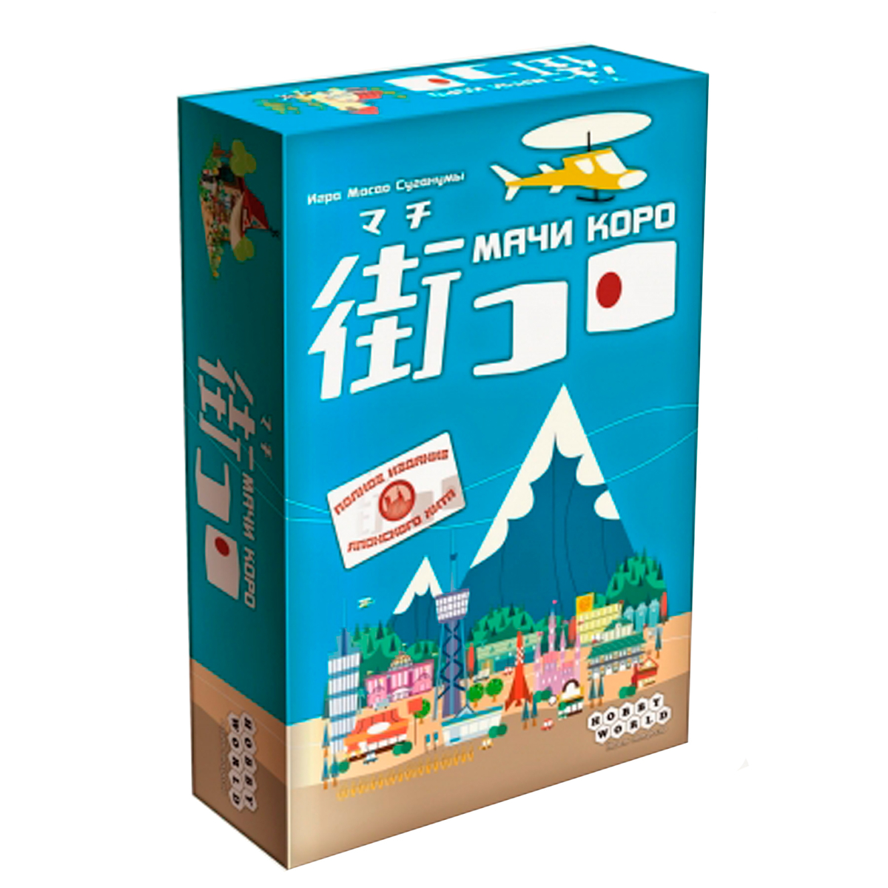

Магазин настольных игр "Fantasy World"
Мачи Коро

Описание товара
Мачи Коро — Настольная игра "Мачи Коро" – игра для 2-5 игроков, которые хотят окунуться в уютную Японию. Вы берёте на себя роль мэра маленького, но амбициозного городка. Как мэр, который любит свой город, вы хотите его процветания и развития. Стройте закусочные и аэропорты, украшайте улочки садами и достопримечательностями, а результат не заставит себя долго ждать. Но не забывайте, что близлежащие городки тоже не стоят на месте, и вам предстоит вступить в нешуточную борьбу за право провозгласить свой город лучшим!
990 руб.
Добавить в корзинуХарактеристики товара
- 72 квадрата участков земли
- 40 фишек пяти цветов
- Поле шкалы подсчёта очков
- Правила игры
Подробное описание товара
Создание поля
В начале игры на поле выкладывается «стартовый квадрат». В фирменной версии он отличается от прочих другой расцветкой рубашки. Стартовый квадрат содержит все возможные элементы местности, что исключает проблему нестыковки квадратов. После этого игроки определяют очерёдность хода и начинают выкладывать игровое поле. Квадраты можно ставить только так, чтобы они касались рядом стоящих квадратов. Причём местность на них должна состыковываться (дороги с дорогами, города с городами, поля с полями).
Фишки подданных
Каждый игрок располагает 8 фишками подданных (одна из них используется для подсчёта очков). После того, как игрок выставил очередной «квадрат» поля, он может выставить одного своего подданного на этот квадрат. При этом игрок не может ставить фигурку на объект (город, дорогу или поле), уже занятый другим игроком. Но в процессе игры объекты могут объединиться в единое целое. Фигурки возвращаются к игроку после того, как их объект закончен. Соответственно фишка может принести очки несколько раз за игру. Исключение составляют крестьяне — они остаются на поле до конца игры.
Очки победы
Выставленные на поле фишки приносят очки, как только объект, который они занимают, закончен. То есть, как только дорога дошла до какого-то конца, город полностью окружён стенами, а монастырь — полностью окружён любыми квадратами. Недостроенные объекты приносят очки в конце игры, однако в некоторых случаях меньше, чем достроенные.
Конец игры
Игра заканчивается, как только заканчиваются все не выставленные на поле квадраты. После этого выполняется подсчёт очков для оставшихся на поле фишек. Выигрывает игрок, набравший больше всего очков.
В начале игры на поле выкладывается «стартовый квадрат». В фирменной версии он отличается от прочих другой расцветкой рубашки. Стартовый квадрат содержит все возможные элементы местности, что исключает проблему нестыковки квадратов. После этого игроки определяют очерёдность хода и начинают выкладывать игровое поле. Квадраты можно ставить только так, чтобы они касались рядом стоящих квадратов. Причём местность на них должна состыковываться (дороги с дорогами, города с городами, поля с полями).
Фишки подданных
Каждый игрок располагает 8 фишками подданных (одна из них используется для подсчёта очков). После того, как игрок выставил очередной «квадрат» поля, он может выставить одного своего подданного на этот квадрат. При этом игрок не может ставить фигурку на объект (город, дорогу или поле), уже занятый другим игроком. Но в процессе игры объекты могут объединиться в единое целое. Фигурки возвращаются к игроку после того, как их объект закончен. Соответственно фишка может принести очки несколько раз за игру. Исключение составляют крестьяне — они остаются на поле до конца игры.
Очки победы
Выставленные на поле фишки приносят очки, как только объект, который они занимают, закончен. То есть, как только дорога дошла до какого-то конца, город полностью окружён стенами, а монастырь — полностью окружён любыми квадратами. Недостроенные объекты приносят очки в конце игры, однако в некоторых случаях меньше, чем достроенные.
Конец игры
Игра заканчивается, как только заканчиваются все не выставленные на поле квадраты. После этого выполняется подсчёт очков для оставшихся на поле фишек. Выигрывает игрок, набравший больше всего очков.
Расширения базовой игры
- The River (2001) — мини-дополнение
- «Таверны и соборы» — Inns & Cathedrals (2002)
- «Купцы и строители» — Traders & Builders (2003)
- The Cathars (2004) — мини-дополнение
- The Count of Carcassonne (2004)
- «Принцесса и дракон» — The Princess & The Dragon (2005)
- The River II (2005) — мини-дополнение
- The Mini Expansion (2006) — мини-дополнение